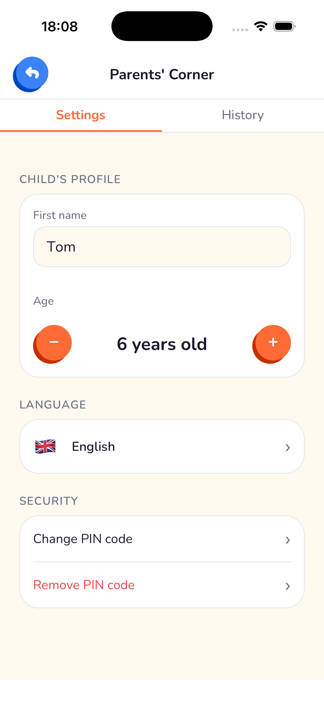

Safety
Is ChatGPT Safe for Kids? What Parents Need to Know in 2026
ChatGPT wasn't designed for children. Here's what the risks actually are — and what to use instead.
Yoggi adapts to your child's age — simple answers for toddlers, richer conversations for teenagers. Voice chat, strict content filtering, and full parental control built in.


ChatGPT and Gemini were designed for adults. Yoggi was built with a single audience in mind: your child.
Violence, sexuality, and inappropriate topics are refused by the AI itself — not filtered after the fact. Yoggi redirects gently, with humor, never with a cold error message.
A 4-year-old and a 13-year-old get completely different answers to the same question. Vocabulary, sentence length, and complexity adjust automatically to the child's profile.
Children who can't yet read or type can simply speak. Yoggi listens, responds, and reads answers aloud — making it accessible from age 3.
A PIN-protected Parents' Corner gives you access to the full chat history. Know exactly what your child has been asking and learning, at any time.
French, Spanish, German, Japanese, Chinese, Hindi, and more. Yoggi always responds in your child's language, making it useful for families worldwide.
Yoggi never pretends to be human. When asked, it explains its AI nature in age-appropriate terms — building healthy digital literacy from an early age.
If a conversation ever raises a genuine concern, Yoggi emails you right away — with a calm, factual explanation, not an alarming notification. You're never the last to know.
A daily AI-generated snapshot of mood and topics, plus an optional weekly email recap — free on every plan, so you stay informed without reading every message.
Yoggi automatically calibrates to your child — no settings to configure.
3-sentence maximum answers. Only the simplest vocabulary. Voice-first — no reading or typing required. Endlessly patient.
Homework help, fun facts, creative stories. Clear explanations that spark curiosity without being overwhelming.
Deeper conversations, study assistance, a space to explore ideas. More nuanced answers, always age-appropriate.
Every conversation your child has with Yoggi is available to you. Not because we track them — because you should always know.


ChatGPT wasn't designed for children. Here's what the risks actually are — and what to use instead.

A roundup of the best AI tools made for children, with a focus on safety, age-appropriateness, and value.
Most "child-safe" AI apps say nothing until it's too late. Here's what a genuine real-time safety alert actually looks like.
Free to download. Works in 12 languages. Safe for ages 3–15.